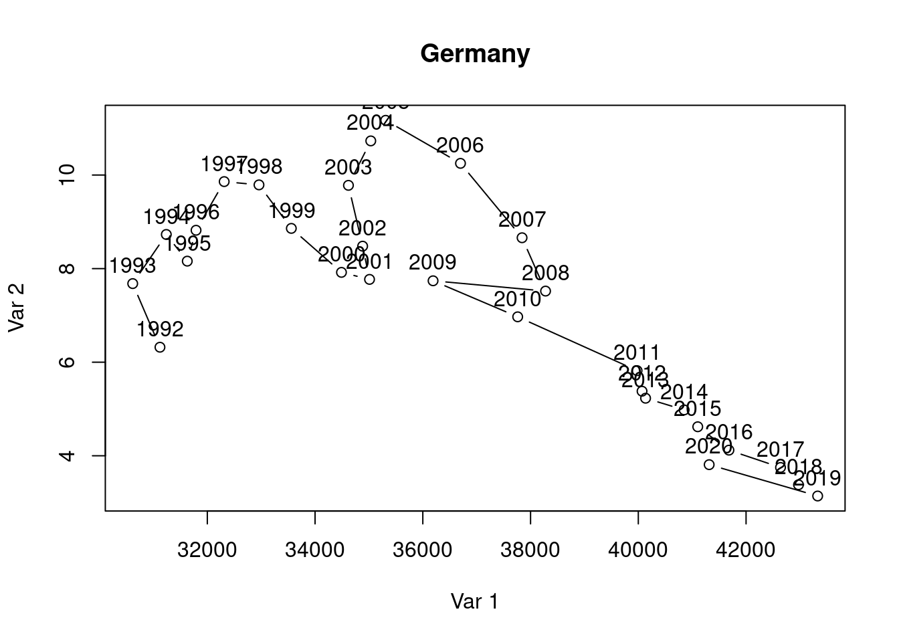
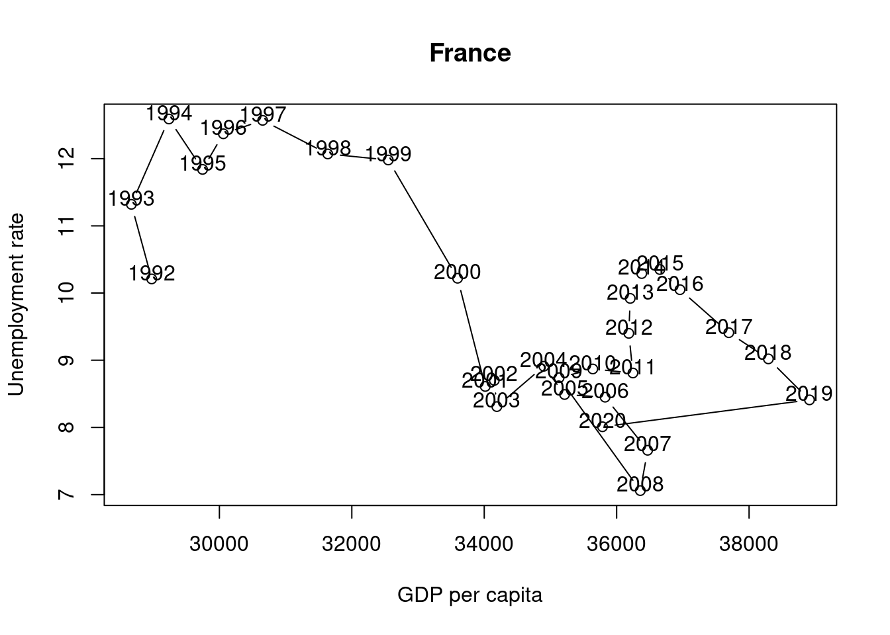
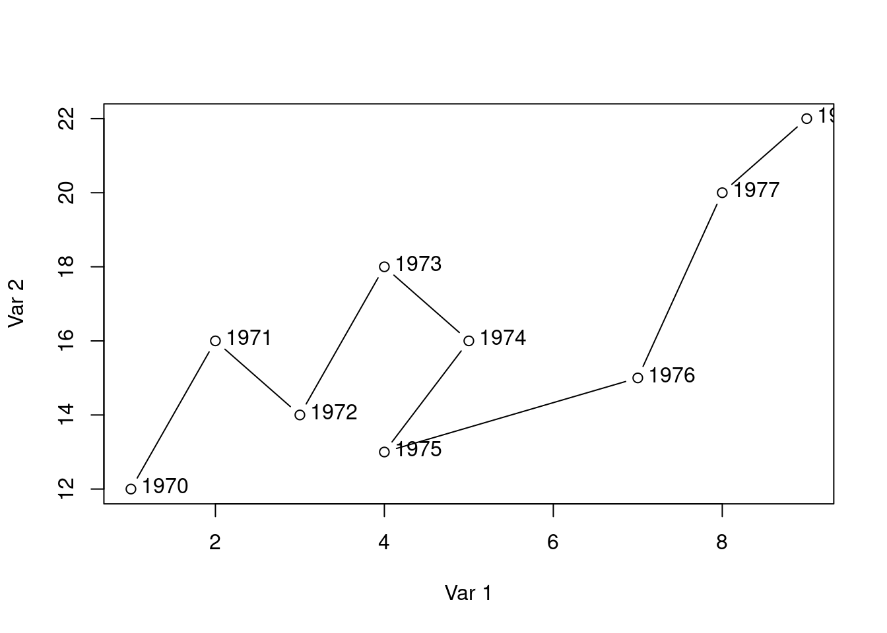

6 Collection of exercises
EXERCISE: Generate and drop variables
Use the mtcars dataset. It is part of the package datasets and can be called with
Create a new tibble called
mtcars_newusing the pipe operator |>. Generate a new dummy variable calledd_cyl_6to8that takes the value 1 if the number of cylinders (cyl) is greater than 6, and 0 otherwise. Do all of this in a single pipe.Generate a new dummy variable called
posercarthat takes a value of 1 if a car has more than 6 cylinders (cyl) and can drive less than 18 miles per gallon (mpg), and 0 otherwise. Add this variable to the tibblemtcars_new.Remove the variable
d_cyl_6to8from the data frame.
Please find solutions here.
EXERCISE: Base R or pipe
- Using the mtcars dataset, write code to create a new dataframe that includes only the rows where the number of cylinders is either 4 or 6, and the weight (wt) is less than 3.5.
Do this in two different ways using:
- The
%in%operator and the pipe |> . - Base R without the pipe |>.
Compare the resulting dataframes using the identical() function.
- Using the mtcars dataset, generate a logical variable that indicates with
TRUEall cars with either 4 or 6 cylinders that wt is less than 3.5 and add this variable to a new dataset.
Please find solutions here.
EXERCISE: Subsetting
- Check to see if you have the mtcars dataset by entering the command mtcars.
- Save the mtcars dataset in an object named cars.
- What class is cars?
- How many observations (rows) and variables (columns) are in the mtcars dataset?
- Rename mpg in cars to MPG. Use rename().
- Convert the column names of cars to all upper case. Use rename_all, and the toupper command.
- Convert the rownames of cars to a column called car using rownames_to_column.
- Subset the columns from cars that end in “p” and call it pvars using ends_with().
- Create a subset cars that only contains the columns: wt, qsec, and hp and assign this object to carsSub. (Use select().)
- What are the dimensions of carsSub? (Use dim().)
- Convert the column names of carsSub to all upper case. Use rename_all(), and toupper() (or colnames()).
- Subset the rows of cars that get more than 20 miles per gallon (mpg) of fuel efficiency. How many are there? (Use filter().)
- Subset the rows that get less than 16 miles per gallon (mpg) of fuel efficiency and have more than 100 horsepower (hp). How many are there? (Use filter() and the pipe operator.)
- Create a subset of the cars data that only contains the columns: wt, qsec, and hp for cars with 8 cylinders (cyl) and reassign this object to carsSub. What are the dimensions of this dataset? Do not use the pipe operator.
- Create a subset of the cars data that only contains the columns: wt, qsec, and hp for cars with 8 cylinders (cyl) and reassign this object to carsSub2. Use the pipe operator.
- Re-order the rows of carsSub by weight (wt) in increasing order. (Use arrange().)
- Create a new variable in carsSub called wt2, which is equal to wt^2, using mutate() and piping
%>%.
Please find solutions here.
EXERCISE: Data transformation
Please download and open the R-script you find here and try to answer the questions therein.
Solutions to the questions are linked in the script.
EXERCISE: Load the Stata dataset “auto” using R
Create a scatter plot illustrating the relationship between the price and weight of a car. Provide a meaningful title for the graph and try to make it clear which car each observation corresponds to.
Save this graph in the formats of .png and .pdf.
Create a variable “`lp100km’” that indicates the fuel consumption of an average car in liters per 100 kilometers. (Note: One gallon is approximately equal to 3.8 liters, and one mile is about 1.6 kilometers.)
Create a dummy variable “`larger6000’” that is equal to 1 if the price of a car is above $6000.
Now, search for the “most unreasonable poser car” that costs no more than $6000. A “poser” car is defined as one that is expensive, has a large turning radius, consumes a lot of fuel, and is often defective (rep78 is low). For this purpose, create a metric indicator for each corresponding variable that indicates a value of 1 for the car that is the most unreasonable in that variable and 0 for the most reasonable car. All other cars should fall between 0 and 1.
Please find the solutions here.
EXERCISE: DatasauRus

Load the packages
datasauRusandtidyverse. If necessary, install these packages.The package
datasauRuscomes with a dataset in two different formats:datasaurus_dozenanddatasaurus_dozen_wide. Store them asdsandds_wide.Open and read the R vignette of the
datasauRuspackage. Also open the R documentation of the datasetdatasaurus_dozen.Explore the dataset: What are the dimensions of this dataset? Look at the descriptive statistics.
How many unique values does the variable
datasetof the tibbledshave? Hint: The function unique() return the unique values of a variable and the function length() returns the length of a vector, such as the unique elements.Compute the mean values of the
xandyvariables for each entry indataset. Hint: Use the group_by() function to group the data by the appropriate column and then the summarise() function to calculate the mean.Compute the standard deviation, the correlation, and the median in the same way. Round the numbers.
What can you conclude?
Plot all datasets of
ds. Hide the legend. Hint: Use thefacet_wrap()and thetheme()function.Create a loop that generates separate scatter plots for each unique datatset of the tibble
ds. Export each graph as a png file.Watch the video Animating the Datasaurus Dozen Dataset in R from The Data Digest on YouTube.
Please find the solutions here.
EXERCISE: Convergence
The dataset convergence.dta, see https://github.com/hubchev/courses/blob/main/dta/convergence.dta, contains the per capita GDP of 1960 (gdppc60) and the average growth rate of GDP per capita between 1960 and 1995 (growth) for different countries (country), as well as 3 dummy variables indicating the belonging of a country to the region Asia (asia), Western Europe (weurope) or Africa (africa).
- Some countries are not assigned to a certain country group. Name the countries which are assign to be part of Western Europe, Africa or Asia. If you find countries that are members of the EU, assign them a ‘1’ in the variable weurope.
- Create a table that shows the average GDP per capita for all available points in time. Group by Western European, Asian, African, and the remaining countries.
- Create the growth rate of GDP per capita from 1960 to 1995 and call it gdpgrowth. (Note: The log value X minus the log value X of the previous period is approximately equal to the growth rate).
- Calculate the unconditional convergence of all countries by constructing a graph in which a scatterplot shows the GDP per capita growth rate between 1960 and 1995 (gdpgrowth) on the y-axis and the 1960 GDP per capita (gdppc60) on the x-axis. Add to the same graph the estimated linear relationship. You do not need to label the graph further, just two things: title the graph
worldand label the individual observations with the country names. - Create three graphs describing the same relationship for the sample of Western European, African and Asian countries. Title the graph accordingly with
weurope,africaandasia. - Combine the four graphs into one image. Discuss how an upward or downward sloping regression line can be interpreted.
- Estimate the relationships illustrated in the 4 graphs using the least squares method. Present the 4 estimation results in a table, indicating the significance level with stars. In addition, the Akaike information criterion, and the number of observations should be displayed in the table. Interpret the four estimation results regarding their significance.
- Put the data set into the so-called long format and calculate the GDP per capita growth rates for the available time points in the countries.
Please find solutions here.
EXERCISE: Unemployment and GDP in Germany and France
The following exercise was a former exam.
Please answer all (!) questions in an R script. Normal text should be written as comments, using the ‘#’ to comment out text. Make sure the script runs without errors before submitting it. Each task (starting with 1) is worth five points. You have a total of 120 minutes of editing time. Please do not forget to number your answers.
When you are done with your work, save the R script, export the script to pdf format and upload the pdf file.
Suppose you aim to empirically examine unemployment and GDP for Germany and France. The data set that we use in the following is ‘forest.Rdata’.
Write down your name, matriculation number, and date.
Set your working directory.
Clear your global environment.
Install and load the following packages: ‘tidyverse’, ‘sjPlot’, and ‘ggpubr’
Download and load the data, respectively, with the following code:
If that is not working, you can also download the data from ILIAS, save it in your working directory and load it from there with:
Show the first eight observations of the dataset ‘df’.
Show the last observation of the dataset ‘df’.
Which type of data do we have here (Panel, cross-section,time series, …)? Name the variable(s) that are necessary to identify the observations in the dataset.
Explain what the assignment operator in R is and what it is good for.
Write down the R code to store the number of observations and the number of variables that are in the dataset ‘df’. Name the object in which you store these numbers ‘observations_df’.
In the dataset ‘df’, rename the variable ‘country.x’ to ‘nation’ and the variable ‘date’ to ‘year’.
Explain what the pipe operator in R is and what it is good for.
For the upcoming analysis you are only interested the following variables that are part of the dataframe ‘df’: nation, year, gdp, pop, gdppc, and unemployment. Drop all other variables from the dataframe ‘df’.
Create a variable that indicates the GDP per capita (‘gdp’ divided by ‘pop’). Name the variable ‘gdp_pc’. (Hint: If you fail here, use the variable ‘gdppc’ which is already in the dataset as a replacement for ‘gdp_pc’ in the following tasks.)
For the upcoming analysis you are only interested the following countries that are part of the dataframe ‘df’: Germany and France. Drop all other countries from the dataframe ‘df’.
Create a table showing the average unemployment rate and GDP per capita for Germany and France in the given years. Use the pipe operator. (Hint: See below for how your results should look like.)
## # A tibble: 2 × 3
## nation `mean(unemployment)` `mean(gdppc)`
## <chr> <dbl> <dbl>
## 1 France 9.75 34356.
## 2 Germany 7.22 36739.- Create a table showing the unemployment rate and GDP per capita for Germany and France in the year 2020. Use the pipe operator. (Hint: See below for how your results should look like.)
## # A tibble: 2 × 3
## nation `mean(unemployment)` `mean(gdppc)`
## <chr> <dbl> <dbl>
## 1 France 8.01 35786.
## 2 Germany 3.81 41315.- Create a table showing the highest unemployment rate and the highest GDP per capita for Germany and France during the given period. Use the pipe operator. (Hint: See below for how your results should look like.)
## # A tibble: 2 × 3
## nation `max(unemployment)` `max(gdppc)`
## <chr> <dbl> <dbl>
## 1 France 12.6 38912.
## 2 Germany 11.2 43329.- Calculate the standard deviation of the unemployment rate and GDP per capita for Germany and France in the given years. (Hint: See below for how your result should look like.)
## # A tibble: 2 × 3
## nation `sd(gdppc)` `sd(unemployment)`
## <chr> <dbl> <dbl>
## 1 France 2940. 1.58
## 2 Germany 4015. 2.37- In statistics, the coefficient of variation (COV) is a standardized measure of dispersion. It is defined as the ratio of the standard deviation (\(\sigma\)) to the mean (\(\mu\)): \(COV={\frac {\sigma }{\mu }}\). Write down the R code to calculate the coefficient of variation (COV) for the unemployment rate in Germany and France. (Hint: See below for what your result should should look like.)
## # A tibble: 2 × 4
## nation `sd(unemployment)` `mean(unemployment)` cov
## <chr> <dbl> <dbl> <dbl>
## 1 France 1.58 9.75 0.162
## 2 Germany 2.37 7.22 0.328- Write down the R code to calculate the coefficient of variation (COV) for the GDP per capita in Germany and France. (Hint: See below for what your result should look like.)
## # A tibble: 2 × 4
## nation `sd(gdppc)` `mean(gdppc)` cov
## <chr> <dbl> <dbl> <dbl>
## 1 France 2940. 34356. 0.0856
## 2 Germany 4015. 36739. 0.109- Create a chart (bar chart, line chart, or scatter plot) that shows the unemployment rate of Germany over the available years. Label the chart ‘Germany’ with ‘ggtitle(“Germany”)’. Please note that you may choose any type of graphical representation. (Hint: Below you can see one of many |> of what your result may look like).

- and 23. (This task is worth 10 points) The following chart shows the simultaneous development of the unemployment rate and GDP per capita over time for France.

Suppose you want to visualize the simultaneous evolution of the unemployment rate and GDP per capita over time for Germany as well.
Suppose further that you have found the following lines of code that create the kind of chart you are looking for.
# Data
x <- c(1, 2, 3, 4, 5, 4, 7, 8, 9)
y <- c(12, 16, 14, 18, 16, 13, 15, 20, 22)
labels <- 1970:1978
# Connected scatter plot with text
plot(x, y, type = "b", xlab = "Var 1", ylab = "Var 2"); text(x + 0.4, y + 0.1, labels) 
Use these lines of code and customize them to create the co-movement visualization for Germany using the available ‘df’ data. The result should look something like this:

- Interpret the two graphs above, which show the simultaneous evolution of the unemployment rate and GDP per capita over time for Germany and France. What are your expectations regarding the correlation between the unemployment rate and GDP per capita variables? Can you see this expectation in the figures? Discuss.
Please find solutions here.
EXERCISE: Import data and write a report
Reproduce Figure 3 of Hortaçsu & Syverson (2015, p. 99) using R. Write a clear report about your work, i.e., document everything with a R script or a R Markdown file.
Here are the required steps:
- Go to https://www.aeaweb.org/articles?id=10.1257/jep.29.4.89 and download the replication package from the OPENICPSR page. Please note, that you can download the replication package after you have registered for the platform.
- Unzip the replication package.
- In the file diffusion_curves_figure.xlsx you find the required data. Import them to R.
- Reproduce the plot using ggplot().
Please find solutions here.
EXERCISE: Explain the weight
In the statistic course of WS 2020, I asked 23 students about their weight, height, sex, and number of siblings. I wonder how good the height can explain the weight of students. Examine with corelations and a regression analysis the association. Load the data as follows:
library("haven")
classdata <- read.csv("https://raw.githubusercontent.com/hubchev/courses/main/dta/classdata.csv")A sketch of a solution is provided here.
EXERCISE: Calories and weight
- Write down your name, your matriculation number, and the date.
- Set your working directory.
- Clear your global environment.
- Load the following package:
tidyverse
The following table stems from a survey carried out at the Campus of the German Sport University of Cologne at Opening Day (first day of the new semester) between 8:00am and 8:20am. The survey consists of 6 individuals with the following information:
| id | sex | age | weight | calories | sport |
|---|---|---|---|---|---|
| 1 | f | 21 | 48 | 1700 | 60 |
| 2 | f | 19 | 55 | 1800 | 120 |
| 3 | f | 23 | 50 | 2300 | 180 |
| 4 | m | 18 | 71 | 2000 | 60 |
| 5 | m | 20 | 77 | 2800 | 240 |
| 6 | m | 61 | 85 | 2500 | 30 |
Data Description:
- id: Variable with an anonymized identifier for each participant.
- sex: Gender, i.e., the participants replied to be either male (m) or female (f).
- age: The age in years of the participants at the time of the survey.
- weight: Number of kg the participants pretended to weight.
- calories: Estimate of the participants on their average daily consumption of calories.
- sport: Estimate of the participants on their average daily time that they spend on doing sports (measured in minutes).
- Which type of data do we have here? (Panel data, repeated cross-sectional data, cross-sectional data, time Series data)
- Store each of the five variables in a vector and put all five variables into a dataframe with the title
df. If you fail here, read in the data using this line of code:
## Rows: 6 Columns: 5
## ── Column specification ───────────────────────────────────────────────────────────────────────────────────
## Delimiter: ","
## chr (1): sex
## dbl (4): age, weight, calories, sport
##
## ℹ Use `spec()` to retrieve the full column specification for this data.
## ℹ Specify the column types or set `show_col_types = FALSE` to quiet this message.Show for all numerical variables the summary statistics including the mean, median, minimum, and the maximum.
Show for all numerical variables the summary statistics including the mean and the standard deviation, separated by male and female. Use therefore the pipe operator.
Suppose you want to analyze the general impact of average calories consumption per day on the weight. Discuss if the sample design is appropriate to draw conclusions on the population. What may cause some bias in the data? Discuss possibilities to improve the sampling and the survey, respectively.
The following plot visualizes the two variables weight and calories. Discuss what can be improved in the graphical visualization.
Make a scatterplot matrix containing all numerical variables.
Calculate the Pearson Correlation Coefficient of the two variables
caloriesandsportweightandcalories
Make a scatterplot with
weightin the y-axis andcalorieson the x-axis. Additionally, the plot should contain a linear fit and the points should be labeled with thesexjust like in the figure shown above.Estimate the following regression specification using the OLS method: \[weight_i=\beta_0+\beta_1 calories_i+ \epsilon_i\]
Show a summary of the estimates that look like the following:
##
## Call:
## lm(formula = weight ~ calories, data = df)
##
## Residuals:
## 1 2 3 4 5 6
## -5.490 -1.182 -6.640 9.435 -6.099 9.976
##
## Coefficients:
## Estimate Std. Error t value Pr(>|t|)
## (Intercept) 7.730275 20.197867 0.383 0.7214
## calories 0.026917 0.009107 2.956 0.0417 *
## ---
## Signif. codes: 0 '***' 0.001 '**' 0.01 '*' 0.05 '.' 0.1 ' ' 1
##
## Residual standard error: 8.68 on 4 degrees of freedom
## Multiple R-squared: 0.6859, Adjusted R-squared: 0.6074
## F-statistic: 8.735 on 1 and 4 DF, p-value: 0.04174Interpret the results. In particular, interpret how many kg the estimated weight increases—on average and ceteris paribus—if calories increase by 100 calories. Additionally, discuss the statistical properties of the estimated coefficient \(\hat{\beta_1}\) and the meaning of the Adjusted R-squared.
OLS estimates can suffer from omitted variable bias. State the two conditions that need to be fulfilled for omitted bias to occur.
Discuss potential confounding variables that may cause omitted variable bias. Given the dataset above how can some of the confounding variables be controlled for?
Solutions are provided here.
EXERCISE: Bundesliga
Open the script that you find here and work on the following tasks:
Set your working directory.
Clear th environment.
Install and load the
bundesligRandtidyverse.Read in the data
bundesligRas a tibble.Replace “Bor. Moenchengladbach” with “Borussia Moenchengladbach.”
Check for the data class.
View the data.
Glimpse on the data.
Show the first and last observations.
Show summary statistics to all variables.
How many teams have played in the league over the years?
Which teams have played Bundesliga so far?
How many teams have played Bundesliga?
How often has each team played in the Bundesliga?
Show summary statistics of variable
Seasononly.Show summary statistics of all numeric variables (
Teamis a character).What is the highest number of points ever received by a team? Show only the name of the club with the highest number of points ever received.
Create a new tibble using
ligaremoving the variablePts_pre_95from the data.Create a new tibble using
ligarenaming W, D, and L to Win, Draw, and Loss. Additionally rename GF, GA, GD to Goals_shot, Goals_received, Goal_difference.Create a new tibble using
ligawithout the variablePts_pre_95and only observations before the year 1996.Remove the three tibbles just created from the environment.
Rename all variables of
ligato lowercase and store it asdfb.Show the winner and the runner up after the year 2010. Additionally show the points received.
Create a variable that counts how often a team was ranked first.
How often has each team played in the Bundesliga?
Make a ranking that shows which team has played the Bundesliga most often.
Add a variable to
dfbthat contains the number of appearances of a team in the league.Create a number that indicates how often a team has played Bundesliga in a given year.
Make a ranking with the number of titles of all teams that ever won the league.
Create a numeric identifying variable for each team.
When a team is in the league, what is the probability that it wins the league?
Make a scatterplot with points on the y-axis and position on the x-axis.
Make a scatterplot with points on the y-axis and position on the x-axis. Additionally, only consider seasons with 18 teams and add lines that make clear how many points you needed to be placed in between rank 2 and 15.
Remove all objects from the environment except
dfbandliga.In Figure 6.2, the ranking history of 1. FC Kaiserslautern is shown. Replicate that plot.
Figure 6.2: Ranking history: 1. FC Kaiserslautern
- In Figure 6.3, I made the graph a bit nicer. Can you spot all differences and can you guess what the dashed line and the triangles mean? How could the visualization be improved further? Replicate the plot.
Figure 6.3: Ranking history: 1. FC Köln
- Try to make the ranking history for each club ever played the league and export the graph as a
pngfile.
Solutions are provided here.
EXERCISE: Okun’s Law
Suppose you aim to empirically examine unemployment and GDP for Germany and France. The data set that we use in the following is ‘forest.Rdata’ and should already been known to you from the lecture.
Write down your name, matriculation number, and date.
Set your working directory.
Clear your global environment.
Install and load the following packages: ‘tidyverse’, ‘sjPlot’, and ‘ggpubr’
Download and load the data, respectively, with the following code:
If that is not working, you can also download the data from ILIAS, save it in your working directory and load it from there with:
load("forest.Rdata")Show the first eight observations of the dataset ‘df’.
Show the last observation of the dataset ‘df’.
Which type of data do we have here (Panel, cross-section,time series, …)? Name the variable(s) that are necessary to identify the observations in the dataset.
Explain what the assignment operator in R is and what it is good for.
Write down the R code to store the number of observations and the number of variables that are in the dataset ‘df’. Name the object in which you store these numbers ‘observations_df’.
In the dataset ‘df’, rename the variable ‘country.x’ to ‘nation’ and the variable ‘date’ to ‘year’.
Explain what the pipe operator in R is and what it is good for.
For the upcoming analysis you are only interested the following variables that are part of the dataframe ‘df’: nation, year, gdp, pop, gdppc, and unemployment. Drop all other variables from the dataframe ‘df’.
Create a variable that indicates the GDP per capita (‘gdp’ divided by ‘pop’). Name the variable ‘gdp_pc’. (Hint: If you fail here, use the variable ‘gdppc’ which is already in the dataset as a replacement for ‘gdp_pc’ in the following tasks.)
For the upcoming analysis you are only interested the following countries that are part of the dataframe ‘df’: Germany and France. Drop all other countries from the dataframe ‘df’.
Create a table showing the average unemployment rate and GDP per capita for Germany and France in the given years. Use the pipe operator. (Hint: See below for how your results should look like.)
## # A tibble: 2 × 3
## nation `mean(unemployment)` `mean(gdppc)`
## <chr> <dbl> <dbl>
## 1 France 9.75 34356.
## 2 Germany 7.22 36739.- Create a table showing the unemployment rate and GDP per capita for Germany and France in the year 2020. Use the pipe operator. (Hint: See below for how your results should look like.)
## # A tibble: 2 × 3
## nation `mean(unemployment)` `mean(gdppc)`
## <chr> <dbl> <dbl>
## 1 France 8.01 35786.
## 2 Germany 3.81 41315.- Create a table showing the highest unemployment rate and the highest GDP per capita for Germany and France during the given period. Use the pipe operator. (Hint: See below for how your results should look like.)
## # A tibble: 2 × 3
## nation `max(unemployment)` `max(gdppc)`
## <chr> <dbl> <dbl>
## 1 France 12.6 38912.
## 2 Germany 11.2 43329.- Calculate the standard deviation of the unemployment rate and GDP per capita for Germany and France in the given years. (Hint: See below for how your result should look like.)
## # A tibble: 2 × 3
## nation `sd(gdppc)` `sd(unemployment)`
## <chr> <dbl> <dbl>
## 1 France 2940. 1.58
## 2 Germany 4015. 2.37- In statistics, the coefficient of variation (COV) is a standardized measure of dispersion. It is defined as the ratio of the standard deviation (\(\sigma\)) to the mean (\(\mu\)): \(COV={\frac {\sigma }{\mu }}\). Write down the R code to calculate the coefficient of variation (COV) for the unemployment rate in Germany and France. (Hint: See below for what your result should should look like.)
## # A tibble: 2 × 4
## nation `sd(unemployment)` `mean(unemployment)` cov
## <chr> <dbl> <dbl> <dbl>
## 1 France 1.58 9.75 0.162
## 2 Germany 2.37 7.22 0.328- Write down the R code to calculate the coefficient of variation (COV) for the GDP per capita in Germany and France. (Hint: See below for what your result should should look like.)
look like.)
## # A tibble: 2 × 4
## nation `sd(gdppc)` `mean(gdppc)` cov
## <chr> <dbl> <dbl> <dbl>
## 1 France 2940. 34356. 0.0856
## 2 Germany 4015. 36739. 0.109- Create a chart (bar chart, line chart, or scatter plot) that shows the unemployment rate of Germany over the available years. Label the chart ‘Germany’ with ‘ggtitle(“Germany”)’. Please note that you may choose any type of graphical representation. (Hint: Below you can see one of many possible examples of what your result may look like).

- and 23. (This task is worth 10 points) The following chart shows the simultaneous development of the unemployment rate and GDP per capita over time for France.

Suppose you want to visualize the simultaneous evolution of the unemployment rate and GDP per capita over time for Germany as well.
Suppose further that you have found the following lines of code that create the kind of chart you are looking for.
# Data
x <- c(1, 2, 3, 4, 5, 4, 7, 8, 9)
y <- c(12, 16, 14, 18, 16, 13, 15, 20, 22)
labels <- 1970:1978
# Connected scatter plot with text
plot(x, y, type = "b", xlab = "Var 1", ylab = "Var 2"); text(x + 0.4, y + 0.1, labels) 
Use these lines of code and customize them to create the co-movement visualization for Germany using the available ‘df’ data. The result should look something like this:
- Interpret the two graphs above, which show the simultaneous evolution of the unemployment rate and GDP per capita over time for Germany and France. What are your expectations regarding the correlation between the unemployment rate and GDP per capita variables? Can you see this expectation in the figures? Discuss.
Solutions are provided here.
Figure is taken from https://github.com/jumpingrivers/datasauRus↩︎